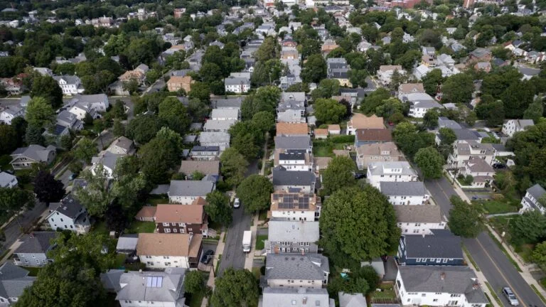
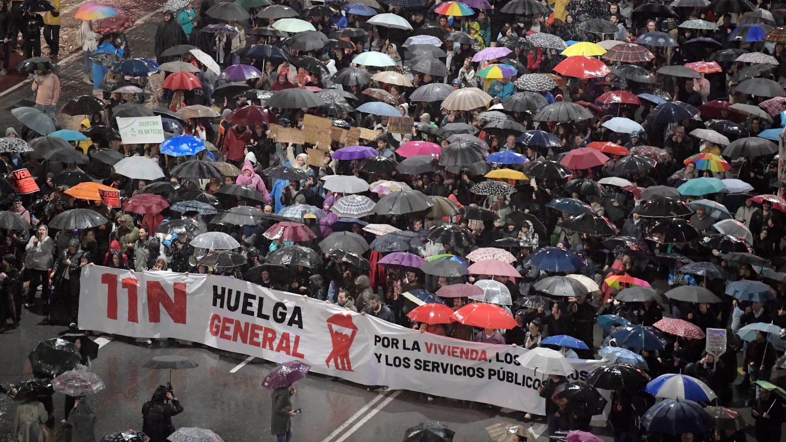

01
公众信息会议：景观噪音条例
Public Information Session: Landscaping Noise Bylaw
了解在特别市镇会议之前提议的燃气动力吹叶机条例。
Learn more about the proposed gas-powered leaf blower bylaw before Special Town Meeting.
原始报道 / Original source ↗DAILY NEWS · 每日新闻简报
Independent AI-assisted summaries of linked reports. Headlines, dates and source URLs are supplied by NewsAPI; summaries are not independent verification of full articles. Please read original reports for details.
Public Information Session: Landscaping Noise Bylaw
了解在特别市镇会议之前提议的燃气动力吹叶机条例。
Learn more about the proposed gas-powered leaf blower bylaw before Special Town Meeting.
原始报道 / Original source ↗White House confronts Democrats over planned probes, claiming possible ‘criminality’
民主党正在准备一项广泛的监督议程，以调查特朗普及其家族自他重返办公室以来如何变得更加富有。
Democrats are preparing a vast oversight agenda to look at how Trump and his family have become wealthier since he returned to office.
原始报道 / Original source ↗
For Greater Boston renters, the jump to homeownership keeps getting harder
一项新的住房报告发现，仅有17%的租户家庭收入足以购买入门级住房，低于2021年的29%。
A new housing report finds that just 17% of renter households earn enough to buy a starter home, down from 29% in 2021.
原始报道 / Original source ↗Massachusetts State Police agree to pay Karen Read $100K to settle lawsuit
里德目前卷入几起民事诉讼，她的律师表示同意州警察的和解是为了避免“某种重复和低效的诉讼”。
Read, who is currently embroiled in several civil suits, agreed to the State Police settlement in the interest of avoiding 'somewhat duplicative and inefficient litigation,' her lawyer said.
原始报道 / Original source ↗布伦特原油与WTI美国原油最新市场行情。
Brent and WTI crude oil market quotations.
价格及更新时间以行情提供方为准。

General strikes to paralyze Spain as protestors clash with police ahead of election campaign
西班牙工人预计将在周三参加该国14年来的第一次总罢工。
Spanish workers are expected to turn out in their millions on Wednesday for the country's first general strike in 14 years.
原始报道 / Original source ↗Zelenskyy warns Ukraine is 'not real estate' as experts say a Russia peace deal remains elusive
泽连斯基总统周二警告称他的国家“不是房地产”，同时美国主导的和平谈判进入第二天和最后一天。
President Zelenskyy warned Tuesday that his country 'was not real estate,' as a second and final day of U.S.-brokered peace talks got underway.
原始报道 / Original source ↗10-year Treasury yield races back to 5% as inflation data, Waller comments drive rate hike expectations
在高于预期的消费者物价指数报告后，国债收益率上升。
Treasury yields moved higher after a hotter-than-expected CPI report.
原始报道 / Original source ↗Nvidia hires major New York law firm to investigate Huang affair
此任命是在黄仁勋与一名被认为是中国间谍的女性发生关系后做出的。
The appointment was made after it emerged Jensen Huang had an affair with a woman believed to be a spy for China.
原始报道 / Original source ↗Russia and Ukraine agree to a prisoner exchange as talks end with no big breakthrough
俄罗斯与乌克兰同意进行大规模战俘交换，阿布扎比的美国调解谈判促成了这一决定。
Russia and Ukraine have agreed to a large exchange of prisoners of war. U.S.-mediated talks in Abu Dhabi led to this decision, marking the biggest humanitarian release since the war began in 2022.
原始报道 / Original source ↗What the U.S. midterms mean for Ukrainians heading into their 5th winter at war
乌克兰人正迎接他们在战争中度过的第五个冬天，俄罗斯加大了对乌克兰关键基础设施的轰炸，但乌克兰人看到一个亮点——美国中期选举。
Ukrainians are heading into their fifth winter at war. Russia has stepped up its bombing campaign of Ukraine's critical infrastructure. But Ukrainians see one bright spot — the U.S. midterm elections.
原始报道 / Original source ↗